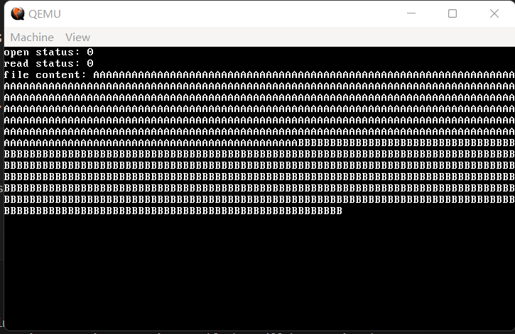
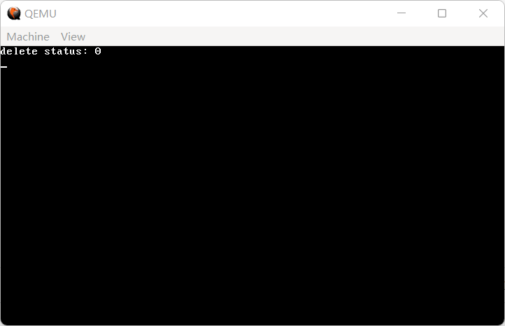
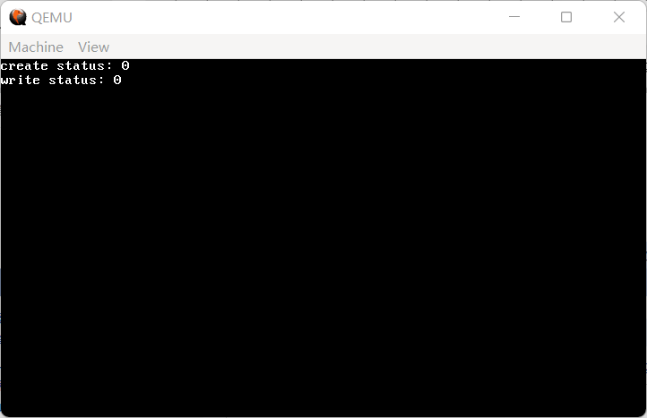
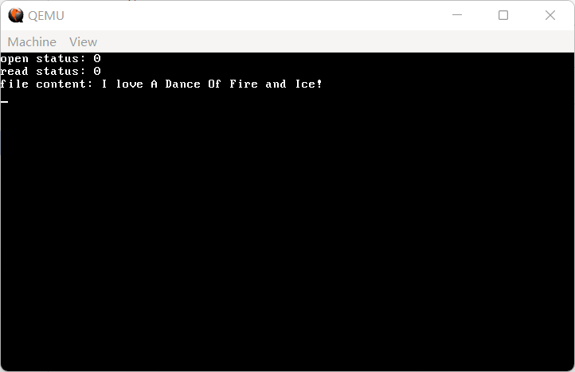

19 实现FAT16文件系统（3）——读取文件、写入文件、删除文件
在实现文件的读取、写入和删除之前，首先还需要了解两个在上一节被刻意忽略掉的概念：FAT 表以及簇。
数据区你远看它是一整块，但是近看它被分割成了一个个的扇区，每一个扇区都还有另一个名字，这就是簇。而 FAT 表，就是簇的索引，每一个 FAT 项的位置实际上都是一个簇的编号，简称簇号。在 FAT16 文件系统中，一个 FAT 项占据 16 位，这也是这个文件系统名字的由来。
每一个 FAT 项所在的位置都对应着一个簇号，而这个 FAT 项中存放的数据，则是这个文件数据的下一个簇的所在位置。这个逻辑有点像链表：首先从文件的 clustno 属性获取第一个簇的位置，然后读取第一个簇的簇号所在的 FAT 项获取下一个簇的位置，以此类推。据规定，在 FAT16 文件系统中，若一个簇号对应的 FAT 项的值大于等于 0xFFF8，那么说明文件结束。一般而言，大多数实现都采用 0xffff 作为文件结束标志。
然而，为了软件识别的需要，微软官方直接把前两个 FAT 项砍了，并规定：数据区的第一个簇的簇号为 2，往后依次类推。这意味着，在读写簇内容的时候还需要手动减 2，才能读到正确的扇区。
那么，我们来写一个读写 FAT 项的函数。虽说没有类，做不到模拟数组操作，但是能接近还是接近一下：
代码 19-1 读写 FAT 项（fs/fat16.c）
// 获取第n个FAT项
static uint16_t get_nth_fat(uint16_t n)
{
uint8_t *fat = (uint8_t *) kmalloc(512); // 分配临时FAT内存
uint32_t fat_start = FAT1_START_LBA; // 默认从FAT1中读取FAT
uint32_t fat_offset = n * 2; // FAT项在FAT表内的偏移，FAT16一个FAT是16位，即2个字节，所以乘2
uint32_t fat_sect = fat_start + (fat_offset / 512); // 该FAT项对应的扇区编号
uint32_t sect_offset = fat_offset % 512; // 该FAT项在扇区内的偏移
hd_read(fat_sect, 1, fat); // 读取对应的一个扇区到FAT内（由于*2，FAT项必然不跨扇区）
uint16_t table_val = *(uint16_t *) &fat[sect_offset]; // 从FAT表中找到对应的FAT项
kfree(fat); // 临时FAT表就用不上了
return table_val; // 返回对应的FAT项
}
// 设置第n个FAT项
static void set_nth_fat(uint16_t n, uint16_t val)
{
int fat_start = FAT1_START_LBA; // FAT1起始扇区
int second_fat_start = FAT1_START_LBA + FAT1_SECTORS; // FAT2起始扇区
uint8_t *fat = (uint8_t *) kmalloc(512); // 临时FAT表
uint32_t fat_offset = n * 2; // FAT项在FAT表内的偏移
uint32_t fat_sect = fat_start + (fat_offset / 512); // FAT项在FAT1中对应的扇区号
uint32_t second_fat_sect = second_fat_start + (fat_offset / 512); // FAT项在FAT2中对应的扇区号
uint32_t sect_offset = fat_offset % 512; // FAT项在扇区内的偏移
hd_read(fat_sect, 1, fat); // 读入到临时FAT表
*(uint16_t *) &fat[sect_offset] = val; // 直接设置对应的FAT项即可，FAT16没有那么多弯弯绕
hd_write(fat_sect, 1, fat); // 写入FAT1
hd_write(second_fat_sect, 1, fat); // 写入FAT2
kfree(fat); // 释放临时FAT表
}
具体细节仍旧写在了注释里。具体而言，为了节省硬盘 IO 的时间（虽然读取根目录疑似也是 32 个扇区），所以在读取 FAT 项时，只读取要读的 FAT 项所在的那个扇区。由于一个 FAT 项占两个字节，所以第 n 个 FAT 项就位于到 FAT 表开始的第 2n 个字节，随后就可以计算扇区数和扇区内的偏移量了。
接下来就是给出簇号，读写对应的簇的函数了：
代码 19-2 读写一个簇（fs/fat16.c）
// 读取第n个clust
static void read_nth_clust(uint16_t n, void *clust)
{
hd_read(n + SECTOR_CLUSTER_BALANCE, 1, clust);
}
// 写入第n个clust
static void write_nth_clust(uint16_t n, const void *clust)
{
hd_write(n + SECTOR_CLUSTER_BALANCE, 1, (void *) clust);
}
其中 SECTOR_CLUSTER_BALANCE 定义于 include/file.h，其值为 DATA_START_LBA - 2。具体原因，是因为簇号要减去 2 才是数据区中的扇区编号，所以在把簇号加上数据区以找到对应扇区的同时，还要再减去 2 以找到正确的位置。
有了读取 FAT 项和读取一个簇的手段，实现读取文件几乎是水到渠成的，其具体操作如下：
1.根据打开的 fileinfo_t 找到第一个簇号。 2.读取第一个簇到缓冲区。 3.读取该簇号对应的 FAT 项，找到该文件下一个簇的簇号。 4.若该 FAT 项大于等于
0xfff8，则文件结束，终止循环。 5.假装下一个簇是第一个簇，重复 2~5。
将上面的思路化为代码，就得到了：
代码 19-3 读取文件（fs/fat16.c）
// 读取文件，当然要有素质地一次读整个文件啦
int fat16_read_file(fileinfo_t *finfo, void *buf)
{
uint16_t clustno = finfo->clustno; // finfo中记录的第一个簇号
char *clust = (char *) kmalloc(512); // 单独给簇分配一个缓冲区，直接往buf里写也行
do {
read_nth_clust(clustno, clust); // 将该簇号对应的簇读取进来
memcpy(buf, clust, 512); // 拷贝入buf
buf += 512; // buf后推一个扇区
clustno = get_nth_fat(clustno); // 获取下一个簇号
if (clustno >= 0xFFF8) break; // 文件结束，退出循环
} while (1);
kfree(clust); // 读完了，释放临时缓冲区
return 0; // 返回
}
如你所见，这个读取文件的函数非常之短，甚至比前面的创建和打开还短，只有 15 行，和读写 FAT 的单个函数差不多长。这就是 FAT16 的简单之处。
作为测试，上一节我们写入了文件 ilovehon.kai，现在是时候同时对打开文件和读取文件进行一次测试了。替换掉上一节的创建文件测试代码，编写测试代码如下：
代码 19-4 读取测试（fs/fat16.c）
fileinfo_t finfo;
int status = fat16_open_file(&finfo, "ilovehon.kai"); // 打开文件 ilovehon.kai
printk("open status: %d\n", status);
if (status == -1) while (1); // 若打开失败就不用读了
char *buf = (char *) kmalloc(finfo.size + 5);
status = fat16_read_file(&finfo, buf);
printk("read status: %d\nfile content: %s\n", status, buf);
kfree(buf);

（图 19-1 读取成功，这里显示的应当是上一节填充的测试内容）
一刻也没有为读取文件的迅速结束而哀悼，立刻赶到战场的是——删除文件！
想要删除一个文件，并不需要把文件的所有内容都随机 01 啦、设成 0 或 1 啦这些，非常简单，你只需要让这个文件无法被找到就可以了。
这里总算可以填上前面挖的一个坑了：
并且在第一个字节为 0xe5 时要自动替换为 0x05
这是为什么呢？正是因为在 FAT 文件系统中，第一个字节为 0xe5 的文件被视为“已经删除”，所以才要特意和谐一下。
那么，既然这样就相当于在根目录区里消失了，数据区的簇又可以赖着，一个文件所剩的资源就只有 FAT 项了。事实上，在删除一个文件时，它所在的 FAT 项也要全部设置为 0。
只要注意这两点，那么实现删除文件也就相当简单：
代码 19-5 删除文件（fs/fat16.c）
// 删除文件
int fat16_delete_file(char *filename) // 什么？为什么不传finfo？删除一个已经打开的文件，听上去很别扭不是吗（虽然在Linux下这很正常）
{
char sfn[20] = {0};
int ret = lfn2sfn(filename, sfn); // 将文件名转换为8.3文件名
if (ret) return -1;
int entries;
fileinfo_t *root_dir = read_dir_entries(&entries); // 读取根目录
int file_ind = -1;
for (int i = 0; i < entries; i++) {
if (!memcmp(root_dir[i].name, sfn, 8) && !memcmp(root_dir[i].ext, sfn + 8, 3)) {
file_ind = i; // 找到对应文件了
break;
}
}
if (file_ind == -1) { // 没有找到
kfree(root_dir); // 不用删了
return -1;
}
root_dir[file_ind].name[0] = 0xe5; // 标记为已删除
hd_write(ROOT_DIR_START_LBA, ROOT_DIR_SECTORS, root_dir); // 更新根目录区数据
kfree(root_dir); // 释放临时缓冲区
if (root_dir[file_ind].clustno == 0) {
return 0; // 内容空空，那就到这里就可以了
}
unsigned short clustno = root_dir[file_ind].clustno, next_clustno; // 开始清理文件所占有的簇
while (1) {
next_clustno = get_nth_fat(clustno); // 找到这个文件下一个簇的簇号
set_nth_fat(clustno, 0); // 把下一个簇的簇号设为0，这样就找不到下一个簇了
if (next_clustno >= 0xfff8) break; // 已经删完了，直接返回
clustno = next_clustno; // 下一个簇设为当前簇
}
return 0; // 删除完成
}
同样，具体细节参见注释。
下面是测试环节。我们在上一节测试创建文件时创建了一个 iloveado.fai 文件，现在我们来删除它。
代码 19-6 删除文件测试（kernel/main.c）
fileinfo_t finfo;
int status = fat16_delete_file("iloveado.fai");
printk("delete status: %d\n", status);
编译，运行，效果如下图所示：

（图 19-2 删除文件疑似成功）
在命令行中调用 ftls，确认删除成功：
（图 19-3 删除成功）
现在，本节最简单的两个操作——读取和删除，已经完成，我们来进攻最后一个据点——写入。只要写入文件完成，后面就都是软件上的事了。
为了简单起见，在写入文件时，只支持将整个文件全部覆盖。相信一些开发经验比较丰富的读者已经要说了：
可是我用过 fseek/lseek，可以在任意位置进行写入呀。
为了简单起见，这些东西我们可以用纯软件来实现，就不麻烦 FAT16 的底层实现了。
实现写入文件主要的问题在于要处理的问题太多，包括但不限于：
- 如果是第一次写入的话，需要分配一个首簇号。
- 可能会出现簇混乱的情况，这种情况下需要再重新找一个新簇。
- 如果写入的部分超出原有的，还是要分配新簇。
- 如果写入的部分少于原有的，需要把原来的簇号释放。
- 需要重新写入当前日期/时间，以及大小等。
对于上面的几个东西，我们来分步解决。这一部分代码的注释非常重要，请认真阅读（？）
首先，针对第一次写入需要分配首簇号的问题，我们添加了一个判断：
代码 19-7 写入文件（1）——为第一次写入的空文件分配簇号（fs/fat16.c）
// 写入文件，为简单起见相当于覆盖了
int fat16_write_file(fileinfo_t *finfo, const void *buf, uint32_t size)
{
uint16_t clustno = finfo->clustno, next_clustno; // 从已有首簇号开始
if (finfo->size == 0 && finfo->clustno == 0) { // 没有首簇号
clustno = 2; // 从第2个簇开始分配
while (1) {
if (get_nth_fat(clustno) == 0) { // 当前簇空闲
finfo->clustno = clustno; // 分配
break; // 已找到空闲簇号
}
clustno++; // 继续寻找下一个簇
}
}
finfo->size = size; // 更新大小
再然后，是写入的主体部分，这里要处理的问题比较复杂。
代码 19-8 写入文件（2）——写入文件主体（fs/fat16.c）
int write_sects = (size + 511) / 512; // 确认要写入的扇区总数，这里向上舍入
while (write_sects) { // 只要还要写
write_nth_clust(clustno, buf); // 将当前buf的512字节写入对应簇中
write_sects--; // 要写入扇区总数-1
buf += 512; // buf后移一个扇区
next_clustno = get_nth_fat(clustno); // 寻找下一个簇
if (next_clustno == 0 || next_clustno >= 0xfff8) {
// 当前簇不可用
next_clustno = clustno + 1; // 从下一个簇开始
while (1) {
if (get_nth_fat(next_clustno) == 0) { // 这个簇是可用的
set_nth_fat(clustno, next_clustno); // 将这个簇当成下一个簇链接上去
break;
} else next_clustno++; // 否则，只好继续了
}
}
clustno = next_clustno; // 将下一个簇看做当前簇
}
最后，是收尾的部分。
代码 19-9 写入文件（3）——扫尾（fs/fat16.c）
// 最后修改一下文件属性
current_time_t ctime;
get_current_time(&ctime); // 获取当前日期
// 更新日期和时间
finfo->date = ((ctime.year - 1980) << 9) | (ctime.month << 5) | ctime.day;
finfo->time = (ctime.hour << 11) | (ctime.min << 5) | ctime.sec;
int entries;
fileinfo_t *root_dir = read_dir_entries(&entries);
for (int i = 0; i < entries; i++) {
if (!memcmp(root_dir[i].name, finfo->name, 8) && !memcmp(root_dir[i].ext, finfo->ext, 3)) {
root_dir[i] = *finfo; // 找到对应的文件，写进根目录
break;
}
}
hd_write(ROOT_DIR_START_LBA, ROOT_DIR_SECTORS, root_dir); // 同步到硬盘
kfree(root_dir);
return 0;
}
比较具体的讲解都已经写在注释当中。
好了，最后还是测试环节。
代码 19-10 写入测试（kernel/main.c）
fileinfo_t finfo;
int status = fat16_create_file(&finfo, "iloveado.fai");
printk("create status: %d\n", status);
char *buf = (char *) kmalloc(512);
strcpy(buf, "I love A Dance Of Fire and Ice!");
status = fat16_write_file(&finfo, buf, strlen(buf));
printk("write status: %d\n", status);
编译，运行，效果如下：

（图 19-4 写入文件疑似成功）
更换上面的测试代码为：
代码 19-11 写入测试II（kernel/main.c）
fileinfo_t finfo;
int status = fat16_open_file(&finfo, "iloveado.fai");
printk("open status: %d\n", status);
char *buf = (char *) kmalloc(512);
status = fat16_read_file(&finfo, buf);
printk("read status: %d\nfile content: %s\n", status, buf);
再次编译运行，效果如下：

（图 19-5 写入文件成功）
至此，我们已经彻底完成了 FAT16 的底层实现，下一章，我们来彻底完成文件系统的制作，实现用户可以使用的一套系统调用。